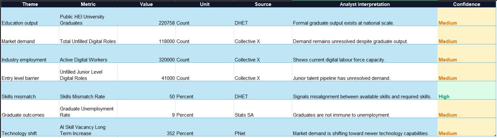

Degrees Are Incomplete Evidence
Graduate output exists at national scale, but unfilled roles remain visible in the digital labour market.
Investigating South Africa's IT Skills Gap
This project investigates whether formal qualifications alone are sufficient indicators of workplace readiness within South Africa's technology sector.

South African graduates often hold formal qualifications, yet employers continue reporting shortages in digital and technology roles. The core question is whether degrees alone are enough to prove ability.
Public education, employment, labour market, and digital skills data were integrated to examine the relationship between graduate output and employer demand. The analysis explores skills shortages, entry level barriers, digital vacancy trends, and evidence of skills mismatches within the technology industry.
The findings suggest that qualifications remain valuable, but employers increasingly require practical skills, demonstrable experience, and evidence of competency alongside academic achievement.


Graduate output exists at national scale, but unfilled roles remain visible in the digital labour market.
Unfilled roles are a meaningful share of active digital worker capacity, which supports a skills gap narrative.
Entry level demand suggests graduates need clearer practical proof of ability and stronger transition pathways.
Graduates should combine formal qualifications with portfolios, real projects, certifications, and practical tools that prove competence. Employers and educators should strengthen junior pathways and practical training alignment.
The future of IT hiring should not be degree versus skill. It should be degree plus evidence of ability.
Back to Projects